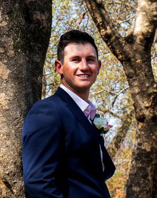

PROFESSIONAL SUMMARY
My love for Golf has led me to over 5 years of experience as the Head of Junior Coaching at a top tier academy. I am a collaborative,
passionate, and motivating leader who has been commended for ingenuity. I have made significant contributions to the academy
and served in all aspects of operations including supervising, scheduling, and directing junior golf programs, as well as coaching
and mentoring children aged 4 to 18 years. I possess a solid work ethic, meticulous attention to detail, with a commitment to
unbeatable customer service which has allowed members and peers to view me as a club pro who is diligent, reliable, and
knowledgeable about the game. My expertise lies in engaging with members and peers as an articulate communicator and quickly
establishing rapport. My ability to impart knowledge with ease, combined with my conscientious and flexible personality, allows me
to build a strong repertoire.
My objective is to obtain a position in a company where there are opportunities to grow and enhance operations
Professional Experience and Career Progression
Golf Coach (May 16- Current)
Wanna Be a Champion Golf Academy
The academy combines golf lessons with a professional coach’s knowledge and expertise with revolutionary teaching methods. The
Academy is equipped with the latest, cutting-edge technology.
Main Responsibilities include:
- Coaching and mentoring children aged 4yrs to 18 years in
golf skills & sportsmanship
- Lesson preparation: supervising, scheduling, and directing
junior golf program, which numbers 106 juniors and
continues to grow.
- In addition, the administration and parent interaction
developed excellent communication skills, attention to detail,
time management and basic computer competency.
Sales Executive(November 2014- April 2016
Vortex Transmissions
Vortex Transmissions offers a range of services including automatic transmission repairs and supplies that are geared towards
getting the most out of vehicles, for the longest time, and at a cost-effective rate.
Main Responsibilities included:
- Maintaining and developing relationships with existing
customers in person, telephonically and mails.
- Responding to incoming mails and phone queries; quoting
and invoicing.
- Cold calling to arrange meetings with potential customers to
prospect for new business.